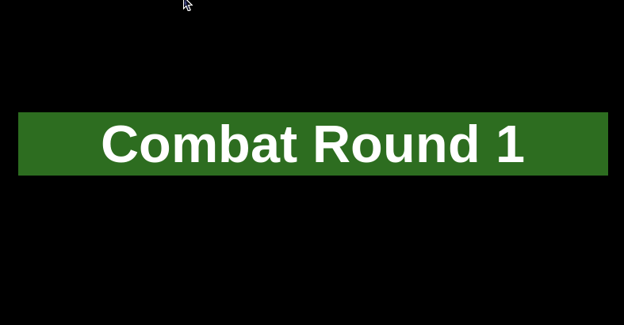
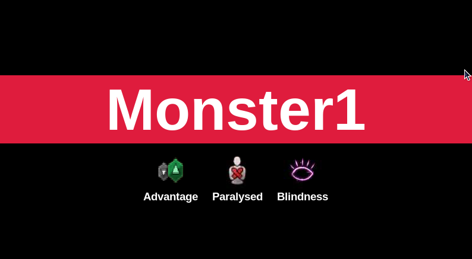
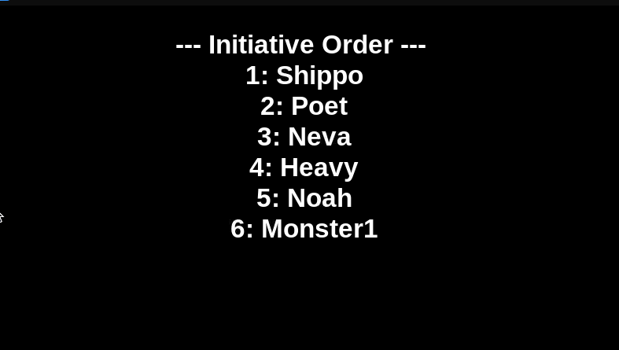
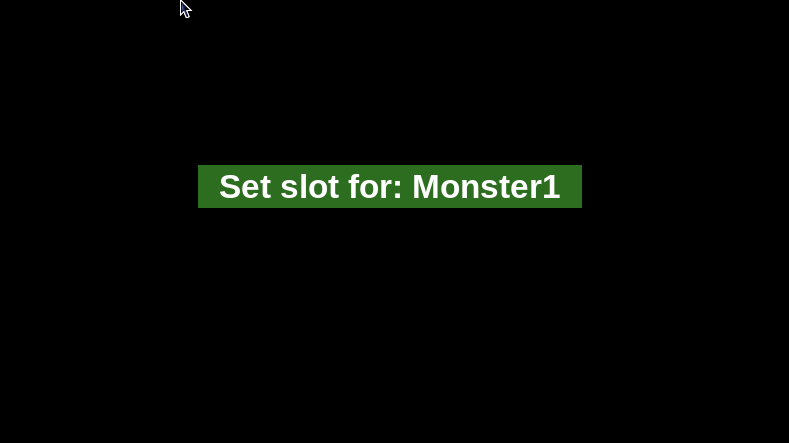

Dynamic Initiative Tracker
Personal Project
----
OVERVIEW
The Dynamic Initiative Tracker is used in my Dungeons and Dragons game to track who's turn it is while playing in a hybrid format. It deploys via my Raspberry Pi which I stream to OBS using VNC.
----
DESIGN PROCESS
To start the design process, I had to consider what I needed to display. I needed a way to display the full turn order, as well as display each person's turn in order. I also wanted to add images that would lay underneath the name, and I could remove and add at will.

Once I managed to use Tkinter to make a basic UI interface, I made functions that would allow me to move between the players using the space bar, reset the program, and add the images. I used keybinds to connect to a USB keyboard, allowing me to update each person, rework the turn order, or display the whole turn order from my seat at the head of the table.



----
HARDWARE
- Raspberry Pi
- Raspberry Pi compatible screen
- USB Keyboard
----
SOFTWARE
- Python
- Tkinter
----
CHALLENGES
The major challenge was setting up the libraries for each player to keep and display the effects properly. I had many issues with the libraries not holding the information properly when the turns progressed, not displaying the correct symbols, and skipping over turns. I had to learn a lot about python library and dictionary structures, as well as Tkinter, in order to properly display the character and their effects. I also had to create a way to skip a player's turn and to do a clean reset. It forced me to learn a lot about python.